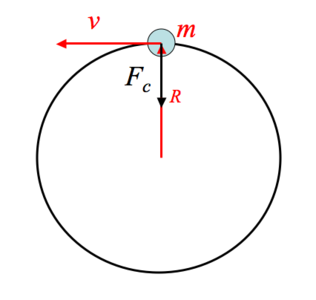
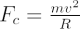

The force needed by a body of mass m, to keep in a circular motion at a distance R, from the centre of a circle with velocity v, is the centripetal force Fc, where

The direction of the force is towards the centre of the circle of motion, and its magnitude and direction can both be derived from a consideration of Newton’s second law of motion.
In astronomy many stars, planets and disks of material move in circular orbits and require a force equivalent to the centripetal force to maintain their circular motion. This force is usually gravity. By balancing the gravitational and centripetal forces it is possible to obtain estimates of the mass within a given radius from the rotation curves of galaxies or accretion disks around supermassive black holes.
When we sit on a merry-go-round or in a car taking a corner we “feel” the centrifugal force pulling us away from the centre of our circular motion which has the same magnitude but opposite sign as the centripedal force. This “pseudo-force” should not be confused with the reality of the centripetal force, but arises because of Newton’s third law of motion: “For every action, there is an equal, but opposite, reaction”. The centrifugal force is a pseudo-force because if the centripetal force ceased for an object in circular motion, the centrifugal force the body is “feeling” would instantly disappear, and the object would travel tangentially to its line of motion. It only arises because the body is in a non-inertial frame of reference.